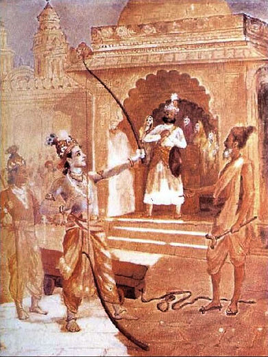
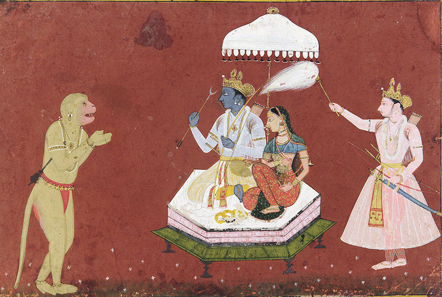
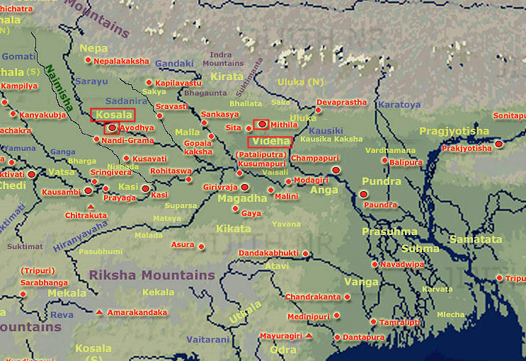

mailto:payer@payer.de
Zitierweise | cite as:
Payer, Alois <1944 - >: Sanskritkurs. -- 42. Lektion 42. -- Fassung vom 2009-01-04. -- URL: http://www.payer.de/sanskritkurs/lektion42.htm
Erstmals hier publiziert: 2009-01-04
Überarbeitungen:
Anlass: Lehrveranstaltungen 1980 - 1984
©opyright: Dieser Text steht der Allgemeinheit zur Verfügung. Eine Verwertung in Publikationen, die über übliche Zitate hinausgeht, bedarf der ausdrücklichen Genehmigung des Verfassers
Dieser Text ist Teil der Abteilung Sanskrit von Tüpfli's Global Village Library
Falls Sie die diakritischen Zeichen nicht dargestellt bekommen, installieren Sie eine Schrift mit Diakritika wie z.B. Tahoma.
Die Devanāgarī-Zeichen sind in Unicode kodiert. Sie benötigen also eine Unicode-Devanāgarī-Schrift.
Alle Maskulina auf -ṛ mit Ausnahme der unter
1.3. angeführten Verwandtschaftsbezeichnungen. Hierher gehören auch
die Verwandtschaftsbezeichnungen:
Den Großteil der hierhergehörigen Nomina bilden Nomina agentis auf das कृत्-Suffix -तृ. Bildung:
Beachten Sie die unregelmäßigen Bildungen (durch rot gekennzeichnet)! |
Maskulinum:
दातृ m. "Geber"
| एकवचनम् | बहुवचनम् | |
|---|---|---|
| प्रथमा | दाता | दातारस् |
| द्वितीया | दातारम् | दातॄन् |
| तृतीया | दात्रा | दातृभिस् |
| चतुर्थी | दात्रे | दातृभ्यस् |
| पञ्चमी | दातुस् | दातृभ्यस् |
| षष्ठी | दातुस् | दातॄणाम् |
| सप्तमी | दातरि | दातृषु |
Zur Erklärung der unregelmäßigen Bildungen siehe Thumb-Hauschild I,2 S. 76 -81
Femininum:
स्वसृ f. wird wie दातृ dekliniert mit Ausnahme des Akkusativ (द्वितीया) Plural: स्वसॄस्.
| Mit dem sehr häufig vorkommenden कृत्-Suffix
-तृ bildet man Nomina agentis (Bezeichnungen für den कर्तृ) zu fast
jeder Wurzel bzw. Kausativstamm. Bildung:
oder
|
Beispiele:
कर्तृ m. "Täter"
जेतृ m. "Sieger"
धातृ m. "Schöpfer"
रक्षितृ m. "Beschützer"
बोधयितृ m. "Wecker"
Abb.: अयं बोधयिता
[Bildquelle: Wikipedia. Public domain]
| Selten vorkommende Neutra auf -तृ haben eine
teilweise eigene Deklination (s. Kielhorn, Grammatik § 148. Das Femininum zu den Stämmen auf -तृ lautet auf -त्री (wie देवी) z.B. कर्त्री f. "Täterin" |
Dazu gehören folgende
Verwandtschaftsbezeichnungen:
Bildung:
|
Beispiele:
पितृ m. "Vater"
मातृ f. "Mutter"
| पुंस् | स्त्री | |||
|---|---|---|---|---|
| एकवचनम् | बहुवचनम् | एकवचनम् | बहुवचनम् | |
| प्रथमा | पिता | पितरस् | माता | मातरस् |
| द्वितीया | पितरम् | पितॄन् | मातरम् | मातॄस् |
| Rest wie दातृ | ||||
Als Vorderglied eines Kompositums stehen
Nomina auf -ṛ selbstverständlich in ihrem schwachen Stamm, d.h.
|
प्रकृति f.: (zu कृ + प्र) Grundform, natürlicher Zustand, Natur; Urmaterie, Urstoff
अर्जुन m. Eigenname: Arjuna, einer der fünf Söhne des पण्डु. Held im महाभारत (siehe Basham, Wonder S. 409 - 414)
स्था + अव 1Ā अवतिष्ठते : abstehen von, Abstand nehmen von, sich fernhalten, verbleiben, dastehen
PPP अवस्थित 3: dastehend, befindlich
पुरा Adv.: einst, früher
अनेक 3: viele (nicht einige)
कुमार m.: Prinz
दूत m.: Bote, Gesandter
इष् (1,4,9) Kaus. इषयति : senden
सकाश m.: Anwesenheit, Gegenwart
शर m.: Pfeil-Schaft, Pfeil
बाण m.: Pfeil, Ziel
ज्ञा + प्रति 9U प्रतिजानाति : billigen, versprechen; Ā: antworten, bestätigen, behaupten, erkennen
चल् 1P चलति : in Bewegung geraten
Fut. चलिष्यति
Perf. Vb चचाल, चेलुर्
Pass. चल्यते
Kaus. चलयति । चालयति
PPP चलित
Absol. -चल्य
Inf. चलितुम्
अधिपति m. = राजन्
आटोप m.: Eitelkeit, Stolz
चिन्तापर 3: gedankenversunken
अन्तरे Adv.: inzwischen
लीला f.: Scherz, Spiel
यावत् Adv.: wie lange, während
तावत् Adv.: so lange
द्विधा । द्वेधा Adv.: zweifach, in zwei Teilen
शंस् 1P शंसति : loben, gebieten
Fut. शंसिष्यति
Perf. I शशंस
Pass. शस्यते
Kaus. शंसयति
PPP शस्त
Absol. शसित्वा । शस्त्वा
Inf. शंसितुम्
हृदय n.: Herz
Abb.: माता, पिता, पुत्रकः
The Diwan I Khas, or Hall of Private Audiences at the Lal Qila (Red Fort) in
Delhi.
[Bildquelle: Wen-Yan King. --
http://www.flickr.com/photos/medapt/430287982/. -- Zugriff am 2009-01-04. --


 Creative
Commons Lizenz (Namensnennung, keine kommerzielle Nutzung, share alike)]
Creative
Commons Lizenz (Namensnennung, keine kommerzielle Nutzung, share alike)]
भर्तृ m. (zu भृ "tragen, erhalten"): Erhalter, Ernährer, Gatte
भार्या f., जाया f. पत्नी f.: Gattin (भार्या = Gerundiv zu भृ : zu Tragende, zu Erhaltende, Unterhaltsberechtigte)
पितृ m.: Vater
पितृ m. Plural: die verstorbenen männlichen Vorfahren, d.h.
Beiden werden Riten vollzogen, sog. श्राद्ध n. Täglich werden je drei männlichen Vorfahren (väterlicherseits (und mütterlicherseits) Wasser und bei bestimmten Gelegenheiten Reisbällchen bzw. Mehlbällchen (पिण्ड m. "Bällchen") dargebracht. So sollen die Vorfahren Nahrung bekommen. Der Vollzug dieser Zeremonie ist mit ein Grund, warum man als Mann einen Sohn zeugen soll. Diejenigen, die durch diese पिण्ड-Gabe verbunden sind heißen सपिण्ड (denen पिण्ड gemeinsam ist). सपिण्ड umfasst sechs Generationen: drei Rückwärts (bis zum Urgroßvater) und drei vorwärts (bis zum Großenkel).
तात m.: Papa
मातृ f.: Mutter
पुत्र m.: Sohn
दुहितृ f. सुता f.: Tochter
नप्तृ m.: Enkel
भ्रातृ m.: Bruder
स्वसृ f., भगिनी f.: Schwester
देवृ m.: Bruder des Ehemanns (Schwager der Frau)
यातृ m.: Gattin des Bruders des Ehemanns
ननान्दृ f.: Schwester des Mannes
श्वसुर f.: Schwiegervater (in alter Zeit: nur der Frau)
श्वस्रू f.: Schwiegermutter (Deklination folgt später)
मातुल m.: Mutterbruder (Onkel mütterlicherseits)
मातुलानी f.: Gattin des Mutterbruders (Mutterbruderfrau)
पितृव्य m.: Vaterbruder (Onkel väterlicherseits)
पितामह m.: Großvater väterlicherseits
पितामही f.: Großmutter väterlicherseits
मातामह m.: Großvater mütterlicherseits
मातामही f.: Großmutter mütterlicherseits
Übersetzen Sie:
प्रकृत्यैव यः कर्माणि क्रियमाणानि पश्यति स आत्मानमकर्तरं पश्यति ॥१॥
कृष्णस्तस्य लोकस्य पिता माता पितामहो धातास्ति ॥२॥
Abb.: कृष्णस्तस्य लोकस्य पिता माता पितामहो धातास्ति
Tiruchchirappalli =
தி௫ச்சிராப்பள்ளி, ca. 1825
[Bildquelle: Wikipedia. Public domain]
आचार्याः पितरः पुत्राश्च पितामहाः श्वशुरा नप्तरो युद्धायावस्थिताः । एतान्न हन्तुमिच्छामीत्यर्जुनो भगवद्गीतायामुवाच ॥३॥
Abb.: अर्जुनो रथे सीदति । कृष्णो
ऽस्य रथवाहो
ऽस्ति । (रथ m. Wagen)
[Bildquelle: Wikipedia. Public domain]
कवयो लब्धपुत्रतायाः पितॄन्मातॄश्च तुष्टुवुः ॥४॥
भर्त्रा भार्या भर्तव्या । तस्माद्भार्येत्युच्यते ॥५॥
सत्पुत्रः पितृभ्यः पिण्डान्ददाति । पितृभिः पिण्डदानमश्यत एवं च सुखजीवो जीवितुं शक्यते ॥६॥
भ्रात्रा स्वसा न विवोड्धव्या । भातरि स्वसारं कामयमाने देवाः क्रुध्यन्ति ॥७॥
क्थं भर्तुर्भ्रातोच्यते । देवेति भर्तुर्भ्राता वक्तव्यः ॥८॥
नप्तॄणां लाभं पितैच्छत् ॥९॥
सीताविवाहः
पुरा मिथिलायां जनको नाम राजा बभूव । तस्य सुता सीता नाम । सा रूपे शीले चानुपमा बभूव । तां परिणेतुमिछ्हन्तो ऽनेके राजकुमारा जनकाय दूतान्प्रेषयामासुः ॥
जनकस्तु तां वीर्यसम्पन्नाय क्षत्रियकुमाराय दातुमैच्छत् । अतः स तां वीर्येण क्रेतव्यामकल्पयत् । तथा हि -- तस्य सकाशे गुरुतरं किमपि धनुरासीत् । य इदं धनुरुद्धृत्यास्मिन्शरं सन्धत्ते स मम सुतां परिणेष्यतीति जनकः प्रतिजज्ञे ॥
तां तस्य प्रतिज्ञां श्रुत्वा शतशो राजकुमाराः समाजग्मुः । परं नैको ऽपि तेषां तद्धनुश्चलयितुमपि शशाक । लङ्काधिपती रावणो ऽपि साटोपं समेत्य सलज्जं प्रतिनिवृत्त इति ज्ञायते ॥
सर्वान्राजकुमारान्प्रतिवृत्तान्विलोक्य को मे दुहितुर्भर्ता भविष्यतीति चिन्तापरो बभूव जनकः । अत्रान्तरे ऽयोध्याधिपतेर्दशरथस्य पुत्रः श्रीरामः सलक्ष्मणो विश्वा्मित्रेण तत्रानीयत । श्रीरामो महर्षेर्विश्वामित्रस्य वचनेन लीलयैव तद्धनुरुद्धृत्य यावत्तस्मिन्बाणमारोपयति तावत्तद्धनुर्द्वेधा भग्नं बभूव ॥

Abb.: धनुर्द्वेधा भग्नं बभूव
Bild von राजा रवि वर्मा (1848 - 1906)
[Bildquelle: Wikipedia. Public domain]
साधु साध्विति श्रीरामस्य वीर्यं प्रशशंसुर्जनाः ॥
जनकस्य राज्ञो हृदयं प्रहृष्टं बभूव । ततः स दशरथादीनानाय्य महता विभवेन सीतरामयोर्विवाहोत्सवं निरवर्तयन् ॥
(संस्कृतप्रथमादर्शे)
Erklärung der rot hervorgehobenen Ausdrücke:
सीता f. Eigenname: Tochter des Königs जनक von विदेह. Sie war aus der Erde herausgekommen, als der König einst den Acker pflügte, deshalb ihr Name: सीता f. "Ackerfurche"

Abb.: रामः, सीता, हनुमान्, लक्ष्मनः
17. Jhdt.
[Bildquelle. Wikipedia. Public domain]
मिथिला f. Eigenname: Hauptstadt von विदेह

Abb.: Lage von मिथिला und विदेह,
अयोध्या und कोसल
[Bildquelle: JIJITH NR / Wikipedia. GNU FDLicense]
जनक m. Eigenname: König von विदेह
गुरुतर 3: Komparativ zu गुरु 3: schwerer, sehr schwer
धनुस् Nom.Akk.sg.n. zu धनुस् n. "Bogen"
शतशस् Adv.: zu hunderten
लङ्का f. Eigennamen: wird mit dem heutigen Sri Lanka (ශ්රී ලංකාව / இலங்கை) identifiziert
रावण m. Eigennamen; Herrscher von लङ्का, Herrscher der राक्षस.
Abb.: रावणः
Yakṣagaṇa-Tanzmaske (ಯಕ್ಷಗಾನ), Karnataka (ಕರ್ನಾಟಕ)
[Bildquelle: Manohara Upadhya / Wikipedia. GNU FDLicense]
अयोध्या f. Eigennamen: Hauptstadt von कोसल (siehe Karte oben!)
दशरथ m. Eigenname: König von कोसल
राम m. Eigenname: Sohn des दशरथ
लक्ष्मन m. Eigenname: Sohn des दशरथ
विश्वामित्र m. Eigenname: ऋषि, zog mir राम und लक्ष्मन aus, um Dämonen zu töten; dafür bekommen die beiden von ihm Zauberwaffen.
सीतारामयोस् Gen.Lok.Dual zu सीताराम
Zu Lektion 43